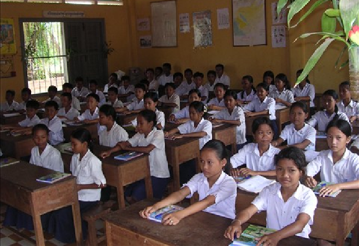

My Primary School Life
I learned in Oudom Mean Chey primary school for six years from 2008 to 2014. I have a lot of friends here and I stayed in my home because my school and my home are near. I study really well in primary school. I studied here until I finished primary and continue to secondary school in 2015.